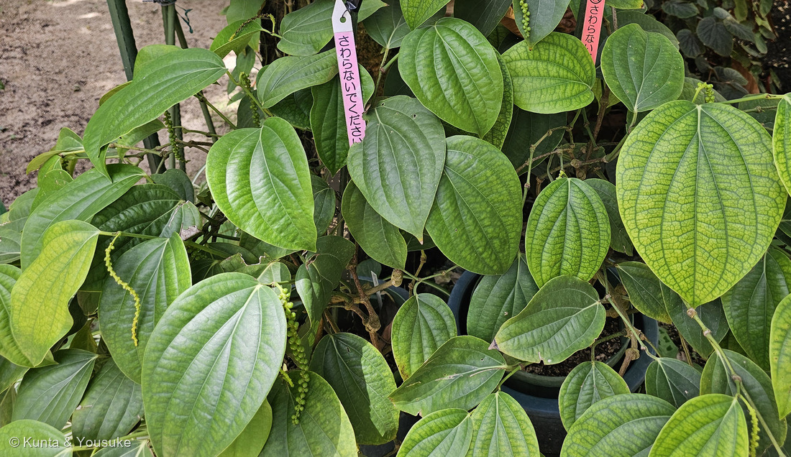
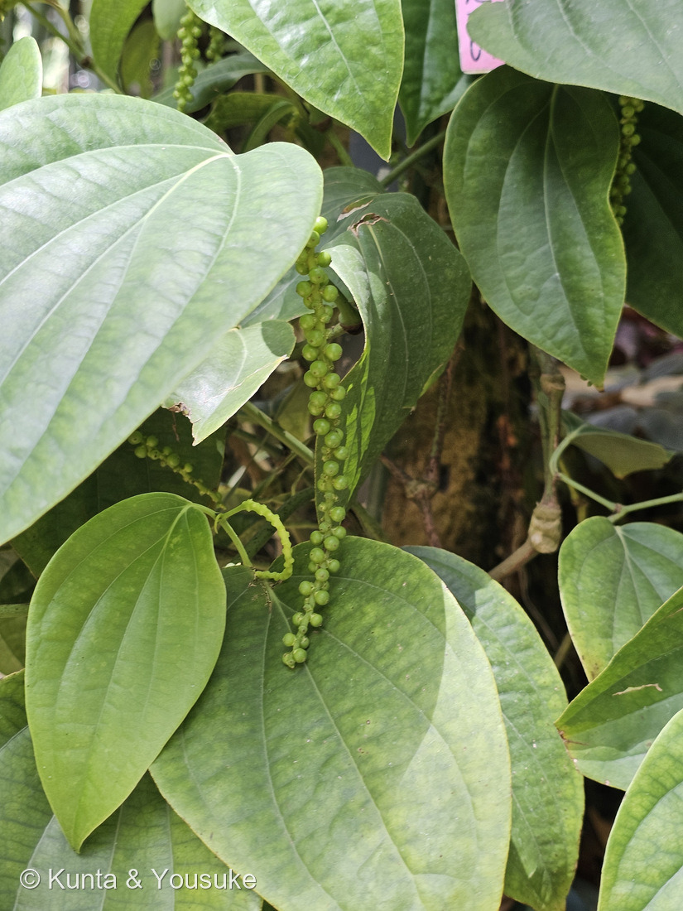
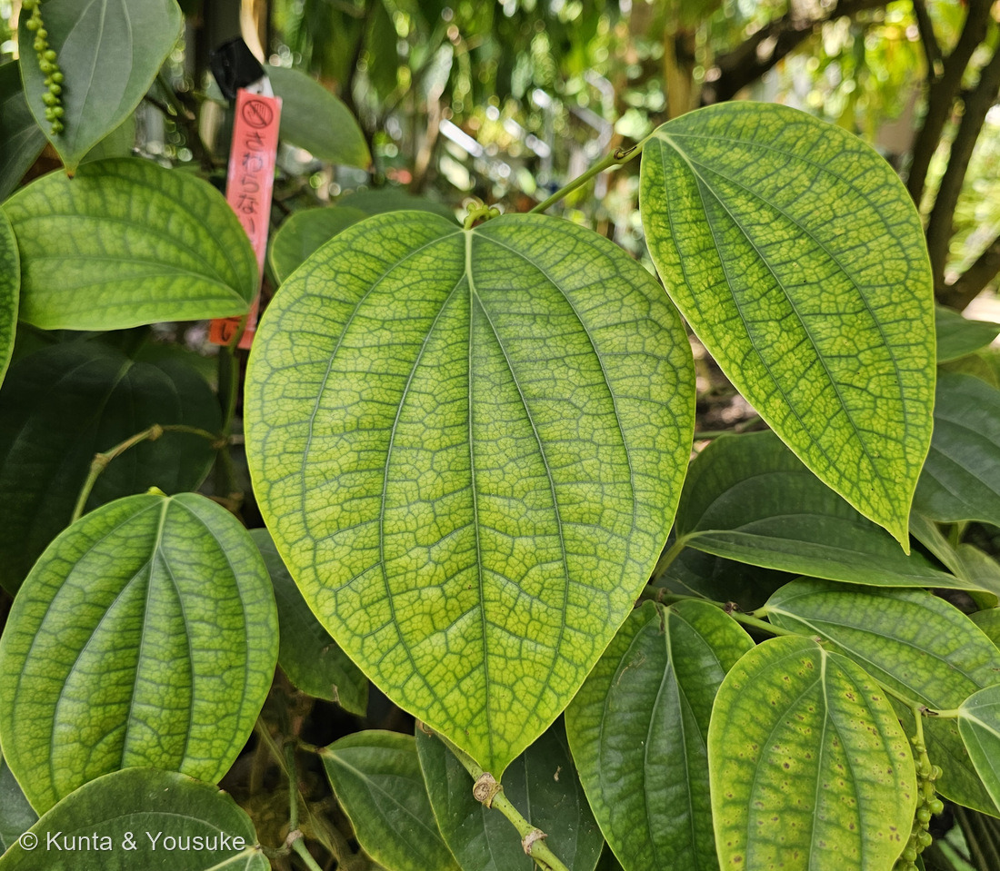
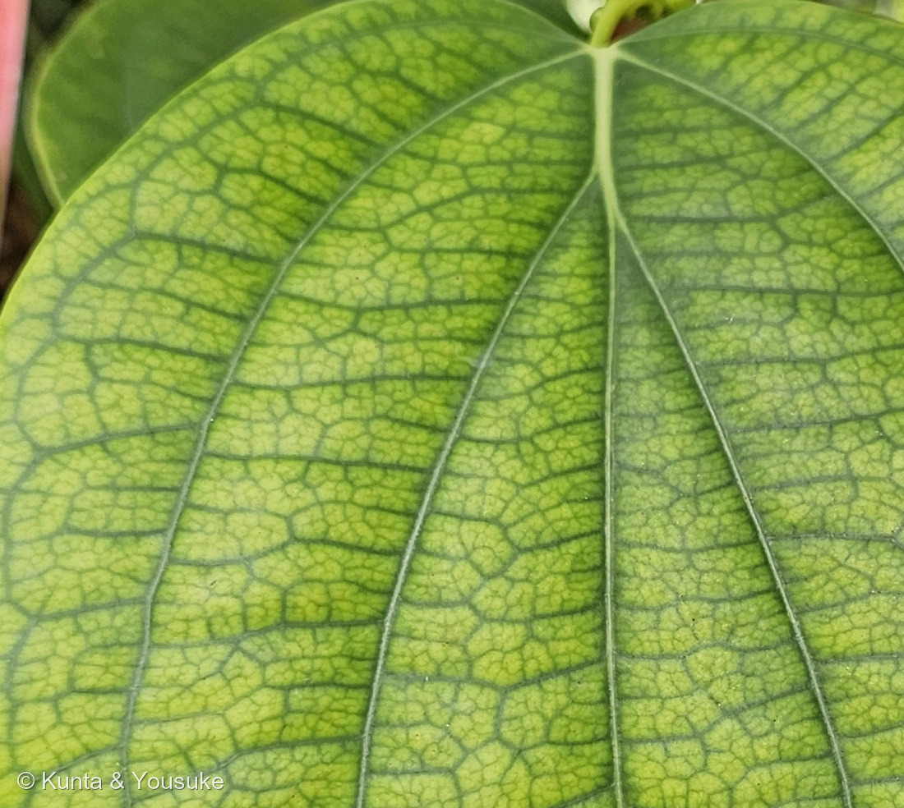

地図を読み込んでいるよ…
🔍 写真も地図も、押しているあいだ拡大して見られるよ（スマホは指を置いてすこし待ってね）。
🌍 の地図＝この子がもともと自生している場所を緑に。インド南西部（マラバル海岸のあたり）原産。園の解説板は「インド南西部原産」、日本薬学会は「インド原産」とする。いまは世界の熱帯地域で広く栽培されている。くわしくは下の地図の説明を見てね。
⭐インドの子だよ。⚠⚠でも、この緑は「インド全体」ではないよ＝園の解説板は「インド南西部原産」とし、日本薬学会は「インド原産」とする。⭐ふつう挙げられるのは、インド南西部のマラバル海岸のあたり＝西ガーツ山脈の、雨の多い森＝⚠地図は国までしか塗れないので、インドじゅうが緑になってしまうけれど、ほんとうのふるさとは南西のすみっこだと思って見てね。⭐⭐⭐そして、いまこの子が育っている場所は、ふるさとよりずっと広い＝園の解説板は「現在、栽培・生産は世界の熱帯地域で行われている」とする＝⭐ベトナム・インドネシア・ブラジル・マレーシアなど（⭐燻太さんの写真②のとなりには、マレーシア・サラワク州のコショウ畑の解説板も立っていたよ）。⭐⭐日本は塗っていない＝ぼくらが会ったのは温室の鉢の中。⚠でも、この粒だけは大むかしから日本に来ていた＝756年の東大寺献物帳（正倉院の目録）に「胡椒」が記されている（日本語版Wikipedia）＝⭐株ではなく、実だけが海をわたってきたんだね。⭐そして中世のヨーロッパでは「貨幣と同じように扱われ、世界貿易に多大な影響を与えた」（園の解説板）＝⚠この緑の一角から、世界地図が塗りかえられたことがある。⭐⭐おまけのフウトウカズラは、同じコショウ属で日本に自生する子＝本州南部から沖縄の、海岸近くの林＝⭐あちらの緑は、この地図には無い場所にあるよ。
⚠ 地図は国（日本と中国だけ県・省）までしか塗れないから、ほんとうの分布より広く見えていることがあるよ。地図はだいたいの場所。正確なところは、上の文を見てね。
コショウ（胡椒）
Piper nigrum L.
英名 black pepper ⭐園の解説板は「スパイスの王様」と呼んでいる ⭐種小名 nigrum＝ラテン語で「黒い」
コショウ科 · Piperaceae（コショウ属 Piper・コショウ目 Piperales）── ⭐⭐図鑑で106科目！はじめてのコショウ科／⭐⭐いちばん近い科は、もう図鑑にいるよ（本文を見てね）
燻太さんの言葉「写真は葉っぱとまだ熟していない果実。これが、ピリッと辛い胡椒の粒になるんだね。コショウ科は図鑑では新しい科だよね？ コショウ科の他の植物って、何があるんだろう？ 黄化し始めた葉の模様も、綺麗だね。」── ⭐⭐3つとも、面白いところを突いてるよ。ひとつずつ答えるね
⭐⭐⭐⭐⭐ 名前と学名の由来 ── 「胡」は西のくに、「椒」はからいもの
- ⭐⭐和名「胡椒」の字を、一つずつ見てみよう。──日本語版Wikipediaは、「胡」を「西方・北方の異民族を指す字」、「椒」を「香辛料」を指す字だとする。
- ⭐⭐⭐つまり「胡椒」は、西のくにから来た、からいものという名前なんだ。⭐中国から見て西＝インドの方角だね。
- ⭐属名 Piper はコショウそのものを指す古い名前。⭐種小名 nigrum はラテン語で「黒い」＝⭐黒胡椒の色だよ。
- ⭐⭐⭐辛味成分の名前も、属名から来ている。──日本語版Wikipediaは、辛みの成分を「ピペリン（piperine）」「シャビシン」「ピペラニン」とする。⭐Piper → piperine。⭐燻太さんの「ピリッと辛い」の正体だね。
- ⭐⭐⭐⭐⭐そして、この子は奈良時代にはもう日本に来ていた。──日本語版Wikipediaは「756年に東大寺献物帳に『胡椒』が記されている」とする。⭐東大寺献物帳＝正倉院に納められた品の目録。⭐⭐1270年前の日本に、この粒があったんだ。
⭐⭐⭐⭐⭐ 燻太さんの質問① ── コショウ科は、図鑑ではじめて
- ⭐⭐⭐⭐⭐そのとおり。106科目だよ。⭐コショウ科（Piperaceae）は、この子がはじめて。
- ⭐でもコショウ目（Piperales）としては、じつは二人目なんだ。⭐一人目が誰かは……次の節で。
⭐⭐⭐⭐⭐ 燻太さんの質問② ── コショウ科の他の植物
- ⭐⭐コショウ科は5属4,000種ほどの大きな科（日本語版Wikipedia）。⭐そして、そのほとんどがたった2つの属に入っている。
- ⭐⭐コショウ属（Piper）＝約2,000種。⭐香辛料になる仲間がたくさん。
- ⭐⭐サダソウ属（Peperomia）＝約1,600種。⭐⭐観葉植物のペペロミアだよ。
- ⭐⭐⭐⭐つまり、園芸店の観葉植物の棚にいる、あの小さくて厚い葉のペペロミアが、コショウの親戚なんだ。⭐燻太さん、これはちょっと意外じゃないかな。
- ⭐⭐⭐日本にも、自生するコショウ科がいるよ。──日本語版Wikipediaはフウトウカズラとサダソウを、日本の自生種としてあげている。⭐フウトウカズラは、この子のおまけにしたよ。
- ⭐食べもの・嗜好品になる仲間＝キンマ（Piper betle）とカヴァ（Piper methysticum）は嗜好品、ヒハツとヒハツモドキは香辛料（同）。⭐ヒハツモドキは沖縄で「ピパーチ」と呼ばれて使われているよ。
- ⭐⭐⭐⭐⭐そして、いちばん近い科は、もう図鑑にいる。──日本語版Wikipediaは「コショウ科はドクダミ科と共にコショウ目に分類されている」とする。
- ⭐⭐⭐025 ドクダミ。──⭐あの、どこにでもある、においの強い草。⭐⭐あれがコショウの、いちばん近いご近所さんだったんだ。（⭐ウマノスズクサ科も同じコショウ目。）
⭐⭐⭐⭐ おまけの話 ── 「コショウ」の名前がつくのに、別の科の子たち
- ⭐⭐これは逆の方向の話。──台所にある「ペッパー」たちは、じつは4つの科にまたがっているんだ。
- ⭐⭐⭐「からい」「粒」「ペッパー」でひとまとめにされているけれど、植物としてはぜんぜん別々。⭐人が舌で分けた仲間と、植物が体で分けた仲間は、ちがうんだね。
⭐⭐⭐⭐⭐ この植物のこと ── 燻太さんが撮った緑の粒が、黒胡椒になる
- ⭐園の解説板が、とてもよく書けていたので引くね。
インド南西部原産のコショウ科の常緑つる性草本植物。小さい花は肉穂状につき、果実はブドウのような房状、熟すと赤色になる。果実をそのまま天日乾燥したものはブラックペッパー、果皮をはいだ後に乾燥したものがホワイトペッパー。古くから世界中の食生活に浸透し、「スパイスの王様」と呼ばれ、古代ギリシャ時代にはすでにヨーロッパに伝わり、中世には貨幣と同じように扱われ、世界貿易に多大な影響を与えた。現在、栽培・生産は世界の熱帯地域で行われている。
- ⭐⭐⭐⭐⭐燻太さんの「これが、ピリッと辛い胡椒の粒になるんだね」＝そのとおり。──⭐⭐しかも大事なのは、この緑のうちに摘むということなんだ。
- ⭐⭐日本語版Wikipediaは、4つの色をこう書き分けている。
- 黒＝未熟果を天日干しで乾燥（⭐写真②の段階！）
- 白＝完熟果を水に浸して発酵させ、外皮を除去
- 緑＝未熟果をゆでてから塩蔵またはフリーズドライ
- ⭐⭐⭐⭐つまり、黒胡椒と白胡椒は「色ちがいの品種」じゃない。──同じ株の、同じ実。⭐採る時期と、作りかたがちがうだけなんだ。
- ⭐⭐体のこと＝つるは長さ10m以上になり、節は膨らみ、節から不定根を出して他物に絡み付く。葉は互生。穂状花序は長さ約10cmで、そこに50〜60個の果実がつく（日本語版Wikipedia）。
- ⭐⭐⭐その「50〜60個」を、燻太さんの写真②でかぞえてみたよ。──見えているだけで50粒以上あった。⚠奥の粒はかくれているし、穂は写真の外へ続いているから、ほんとうはもっと多いはず。⭐出典の数と、ちゃんと合うね。
⭐⭐⭐⭐ 燻太さんの質問③ ── 黄化しはじめた葉の、あの網目
- ⭐燻太さんの言葉＝「黄化し始めた葉の模様も、綺麗だね。」⭐⭐ぼくもそう思って、思いきり拡大したのが写真④だよ。
- ⭐⭐見えているのは、こういう形。──葉脈と、そのすぐまわりだけが濃い緑に残り、脈と脈のあいだが黄色くなっている。⭐しかも、いちばん細かい末端の脈まで緑の線が残っていて、葉ぜんたいが細かい網のように見える。
- ⭐⭐⭐葉が黄色くなること自体は、ただ弱っているのとはちがうんだ。──葉の老化は「養分の再分配システム」で、葉の中のタンパク質などを分解して、若い組織や種子へ送りかえすはたらきだとされている（大阪公立大学の研究紹介ほか）。
- ⭐⭐ここからは、ぼくの読みだよ。──送りかえす通り道は、葉脈（の中の篩管）。⭐だから脈のまわりがいちばん最後まで働いていて、そこだけ緑が残るのだと思う。⚠そう書いてある出典には当たれなかったので、ここは「そう見える」という話にしておくね。
- ⚠⚠もう一つ、可能性を残しておくよ。──脈のあいだが黄色くなる模様は、マグネシウムなどが足りないときにも出る（葉脈間クロロシスという）。⭐この株は温室の鉢植えだから、そちらの可能性も消せないんだ。
- ⏳⭐⭐見分けかたを一つ。──鉄が足りないときは新しい葉から黄色くなる。⭐老化やマグネシウム不足は古い葉から。⭐⭐写真の黄色い葉はどれも大きく育った葉だから、少なくとも鉄不足ではなさそうだよ。⏳次に行ったら、若い葉が緑のままかを見てきてほしいな。
同定について
- ⭐⭐園の解説板に「コショウ（胡椒）／Piper nigrum」と明記され、その板と株が同じ画面に写っている（原本の写真①）。⭐だから種まで書けるよ。⚠ただし板そのものは、コショウの果実・花・畑の写真が3枚印刷されていたので公開していない（228で決めたルール）。⭐文章は出典として引いたよ（247で決めた「名札は載せてよい／解説板は載せない・引用だけ」の形）。
- ⭐写真の側の裏づけ＝①つる性で、節がふくらみ、支柱の木に這い登っている（写真①） ②葉は卵形〜心形で先がとがり、互生し、たて方向の太い脈が目立つ（写真③） ③穂状花序に小さな果実が密につき、垂れ下がる（写真②）。
- ⚠品種までは決めていないよ。
出典：広島市植物公園の解説板（コショウ／Piper nigrum／⚠板そのものは写真が印刷されているため公開していない・文章のみ引用）／日本語版Wikipedia「コショウ」「コショウ科」「コショウボク」／公益社団法人 日本薬学会「コショウ」／大阪公立大学 研究ニュース「植物の葉の老化を促す新因子を発見」（葉の老化＝養分の再分配というとらえかた）／三河の植物観察「フウトウカズラ」・日本語版Wikipedia「フウトウカズラ」（おまけの子）。